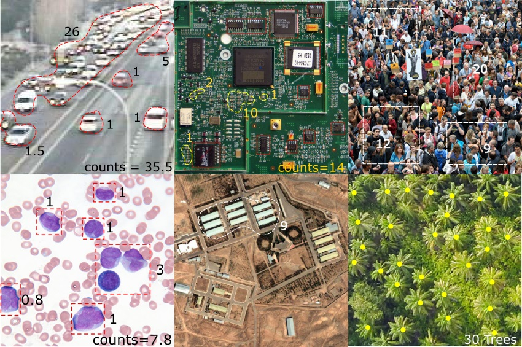

Counting visual instances and objects in images is a fundamental problem in computer vision.
Its application in clinical diagnosis, surveillance and manufacturing include counting cells, vehicles, people, infrastructure, etc.
We applied convolutional neural network (CNN) in counting vehicles in
two datasets: COWC of overhead satellite images and
TRANCOS of CCTV camera images with perspective.
We explored three architectures:VGG-M net,
Pyramid Scene Parsing Network (PSPNet)
and Spatial Transformer Network (STN) and achieved state-of-art counting accuracy.
This project was done under supervision by Professor Andrew Zisserman and Dr. Carlos Arteta at the
Visual Geometry Group, University of Oxford, UK.
Part of this project leaded to my Master Thesis "Counting Using Deep Learning" (to read the thesis, please view "Read More").